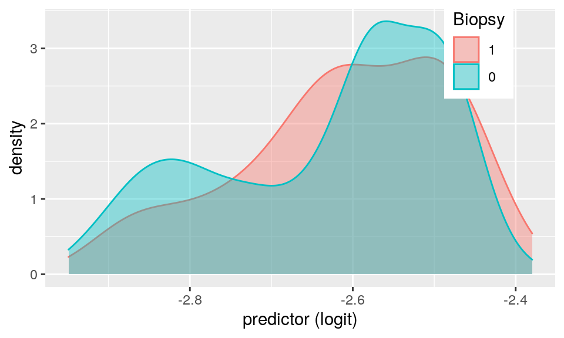

```
# This "Cervical Cancer Risk Factors for Biopsy" dataset was obtained thanks to UCI Repository. I chose this dataset because I currently work at a ob/gyn clinic and my passion for women's health is what initially motivated me to pursue a medical career. Additionally, cervical cancer is one of the most preventable cancers. The original dataset contained 858 observations and 36 columns. For efficiency, I have only included the following 6 variables: # Binary variable (1):
# "IUD" - 0 or 1. Research shows that IUD usage may reduce cervical cancer risks up to 30%.
# Numeric varaibles (3):
# "Hormonal.Contraceptives..years." - CDC states that 5+ years of birth control pill use can increase risk.
# "Smokes..years." - CDC lists smoking as a risk factor for cervical cancer.
# "Number.of.sexual.partners" - Per Mayo Clinic, a greater number of partners increases HPV risk.
# Categorical variable (1):
# "Num.of.pregnancies" - CDC lists having given birth to 3+ children as a risk factor. So, I adjusted the variable from numeric to categorical: 'Risk' = 3+, 'No' = 0-2
# Response variable (1):
# "Biopsy" - 0 or 1. Biopsy is a method of tissue retrieval used to test for cervical cancer.library(dplyr)
library(tidyverse)
library(randomForest)
library(glmnet)
data <- read.csv("prj2data.csv",header=TRUE)# modify "Num.of.pregnancies" variable to become categorical, rather than numeric:
data<-data%>%mutate(Num.of.pregnancies = recode(Num.of.pregnancies, '0' = "No", '1' = "No", '2' = "No", '3' = "Risk", `4` = "Risk", '5' = "Risk", '6' = "Risk", '7' = "Risk", '8' = "Risk", '9' = "Risk", '10'="Risk", '11'="Risk"))
# remove any observations that has '?' in a column. Now yields 677 observations
data <- data%>% filter(Num.of.pregnancies!= '?')%>%filter(Number.of.sexual.partners!= '?')%>%filter(Smokes..years.!='?')%>%filter(Hormonal.Contraceptives..years.!='?')%>%filter(IUD!='?')%>%filter(Biopsy!='?')
glimpse(data)## Rows: 677
## Columns: 6
## $ Number.of.sexual.partners <fct> 4, 1, 1, 5, 3, 3, 3, 1, 1, 3, 1, 4, 2…
## $ Num.of.pregnancies <fct> No, No, No, Risk, Risk, No, Risk, Ris…
## $ Smokes..years. <fct> 0, 0, 0, 37, 0, 0, 34, 0, 0, 0, 0, 0,…
## $ Hormonal.Contraceptives..years. <fct> 0, 0, 0, 3, 15, 0, 0, 2, 0, 2, 8, 10,…
## $ IUD <fct> 0, 0, 0, 0, 0, 0, 1, 1, 0, 0, 0, 1, 0…
## $ Biopsy <int> 0, 0, 0, 0, 0, 0, 1, 0, 0, 0, 0, 0, 0…# MANOVA: categorical variable 'Num.of.pregnancies' ; numerical variables = Hormonal, Smokes, Sexual partners
manova <- manova(cbind(Hormonal.Contraceptives..years., Smokes..years.,Number.of.sexual.partners) ~ Num.of.pregnancies, data = data)
summary(manova)## Df Pillai approx F num Df den Df Pr(>F)
## Num.of.pregnancies 1 0.064268 15.408 3 673 1.052e-09 ***
## Residuals 675
## ---
## Signif. codes: 0 '***' 0.001 '**' 0.01 '*' 0.05 '.' 0.1 ' ' 1# since MANOVA yielded significant results (p = 1.052e-09), we perform ANOVA for each response variable:
summary.aov(manova)## Response Hormonal.Contraceptives..years. :
## Df Sum Sq Mean Sq F value Pr(>F)
## Num.of.pregnancies 1 4239 4239.0 23.308 1.708e-06 ***
## Residuals 675 122758 181.9
## ---
## Signif. codes: 0 '***' 0.001 '**' 0.01 '*' 0.05 '.' 0.1 ' ' 1
##
## Response Smokes..years. :
## Df Sum Sq Mean Sq F value Pr(>F)
## Num.of.pregnancies 1 34.5 34.519 0.8783 0.349
## Residuals 675 26527.8 39.300
##
## Response Number.of.sexual.partners :
## Df Sum Sq Mean Sq F value Pr(>F)
## Num.of.pregnancies 1 133.0 133.049 24.144 1.123e-06 ***
## Residuals 675 3719.7 5.511
## ---
## Signif. codes: 0 '***' 0.001 '**' 0.01 '*' 0.05 '.' 0.1 ' ' 1# before post-hoc t-tests, need to transform numeric variables to 'numeric'
data<-transform(data, Hormonal.Contraceptives..years. = as.numeric(Hormonal.Contraceptives..years.))
data<-transform(data, Smokes..years. = as.numeric(Smokes..years.))
data<-transform(data, Number.of.sexual.partners = as.numeric(Number.of.sexual.partners))
# post-hoc t-tests. Although unnecessary since the categorical variable only has 2 groups ('No' vs. 'Risk')
pairwise.t.test(data$Hormonal.Contraceptives..years., data$Num.of.pregnancies, p.adj = "none")##
## Pairwise comparisons using t tests with pooled SD
##
## data: data$Hormonal.Contraceptives..years. and data$Num.of.pregnancies
##
## No
## Risk 1.7e-06
##
## P value adjustment method: nonepairwise.t.test(data$Smokes..years., data$Num.of.pregnancies, p.adj = "none")##
## Pairwise comparisons using t tests with pooled SD
##
## data: data$Smokes..years. and data$Num.of.pregnancies
##
## No
## Risk 0.35
##
## P value adjustment method: nonepairwise.t.test(data$Number.of.sexual.partners, data$Num.of.pregnancies, p.adj = "none")##
## Pairwise comparisons using t tests with pooled SD
##
## data: data$Number.of.sexual.partners and data$Num.of.pregnancies
##
## No
## Risk 1.1e-06
##
## P value adjustment method: none# post-hoc t-tests yields: significant difference between the Risk and No Risk number of pregnancy groups regarding the number of sexual partners (p = 1.1e-06), and between the Risk and No Risk number of pregnancy groups regarding years of hormonal contraceptive use (p = 1.7e-06), but no significant difference regarding years of smoking (p = 0.35). # I completed: 1 MANOVA, 3 ANOVAs, and (6*3) t-tests = 22 total tests
# making our chance of at least 1 type I error = (1−.95^X) = (1 - .95^22) = 0.6764665 = 67.64665 %
# so, we should use bonferroni a = .05/22 = 0.002272727
# after bonferroni correction, the same results remain: There is a significant difference between the Risk and No Risk number of pregnancy groups regarding the number of sexual partners, and regarding years of hormonal contraceptive use, but no significant difference regarding years of smoking. # check MANOVA assumptions
library(rstatix)
group <- data$Num.of.pregnancies
DVs <- data %>% select(Hormonal.Contraceptives..years. , Smokes..years. , Number.of.sexual.partners)
# Test multivariate normality for each group:
# note: code 'sapply(split(DVs,group), mshapiro_test)' gives me error that my sample size is over 5000, so I am using the following:
shapiro.test(data$Hormonal.Contraceptives..years.[0:5000])##
## Shapiro-Wilk normality test
##
## data: data$Hormonal.Contraceptives..years.[0:5000]
## W = 0.81704, p-value < 2.2e-16shapiro.test(data$Smokes..years.[0:5000])##
## Shapiro-Wilk normality test
##
## data: data$Smokes..years.[0:5000]
## W = 0.37979, p-value < 2.2e-16shapiro.test(data$Number.of.sexual.partners[0:5000])##
## Shapiro-Wilk normality test
##
## data: data$Number.of.sexual.partners[0:5000]
## W = 0.89536, p-value < 2.2e-16# all 3 yielded p<.05 so assumption is violated. Will not proceed to test for homogeneity of covariance matrices
# The MANOVA assumptions were NOT met. The population variances were NOT equal across groups. This is likely due to the non-normal nature of the variables (ex: outliers on both ends for years of smoking, 0 or 30+ years)# first, calculate observed F-statistic for: categorical = 'Num.of.pregnancies' ; numerical variable = 'Smokes..years.'
summary(aov(Smokes..years.~Num.of.pregnancies,data=data))## Df Sum Sq Mean Sq F value Pr(>F)
## Num.of.pregnancies 1 35 34.52 0.878 0.349
## Residuals 675 26528 39.30observedF <- 0.878
# null hypothesis: The 2 groups (no risk for number of pregnancies, vs. yes risk number of pregnancies) have EQUAL means for years of smoking
# alt hypothesis: The groups' means differ
# randomization test of one-way ANOVA (N=677 and K=2):
# note: due to large sample size N=677, for efficiency I used 1000 repititions instead of 5000 because R kept crashing when knitting
Fs<-replicate(1000,{
new<-data%>%mutate(Smokes..years.=sample(Smokes..years.))
SSW<- new%>%group_by(Num.of.pregnancies)%>%summarize(SSW=sum((Smokes..years.-mean(Smokes..years.))^2))%>%
summarize(sum(SSW))%>%pull
SSB<- new%>%mutate(mean=mean(Smokes..years.))%>%group_by(Num.of.pregnancies)%>%mutate(groupmean=mean(Smokes..years.))%>%
summarize(SSB=sum((mean-groupmean)^2))%>%summarize(sum(SSB))%>%pull
(SSB/1)/(SSW/675) #compute F statistic (num df = K-1 = 2-1 = 1, denom df = N-K = 677-2 = 675)
})
mean(Fs>observedF)## [1] 0.337# interpret results: p-value = 0.367, so we fail to reject the null hypothesis. The groups 'No' and 'Risk' for number of pregnancies do not significantly differ regarding their mean years of smoking.
# note: when using 5000 repetitions, p=0.347, slightly lower value but still non-significant. (just couldn't knit 5000 reps without R crashing)
# plot visualizing the null distribution and the test statistic:
hist(Fs, prob=T); abline(v = observedF, col="red",add=T)library(sandwich)
library(lmtest)
set.seed(348)
# first need to mean-center 'Hormonal...'
data$Hormonal_c <- (data$Hormonal.Contraceptives..years. - mean(data$Hormonal.Contraceptives..years., na.rm = T))
# linear regression: using response = 'Smokes..years.' , and 'Hormonal...' (numeric), and 'Num.of.pregnancies' (categorical)
fit1 <- lm(Smokes..years. ~ Hormonal_c * Num.of.pregnancies, data = data)
summary(fit1)##
## Call:
## lm(formula = Smokes..years. ~ Hormonal_c * Num.of.pregnancies,
## data = data)
##
## Residuals:
## Min 1Q Median 3Q Max
## -3.682 -2.500 -2.078 -1.276 27.724
##
## Coefficients:
## Estimate Std. Error t value Pr(>|t|)
## (Intercept) 4.05305 0.30221 13.411 < 2e-16 ***
## Hormonal_c 0.06168 0.02243 2.750 0.00612 **
## Num.of.pregnanciesRisk 0.39999 0.51190 0.781 0.43485
## Hormonal_c:Num.of.pregnanciesRisk -0.07478 0.03692 -2.025 0.04322 *
## ---
## Signif. codes: 0 '***' 0.001 '**' 0.01 '*' 0.05 '.' 0.1 ' ' 1
##
## Residual standard error: 6.242 on 673 degrees of freedom
## Multiple R-squared: 0.01269, Adjusted R-squared: 0.008286
## F-statistic: 2.883 on 3 and 673 DF, p-value: 0.03512# interpret coefficients:
# intercept = 4.05305: The mean/predicted years of smoking for women with 0 years of hormone usage is 4.05305 years of smoking.
# coefficient for 'Hormonal_c' = 0.06168: for every 1year increase in hormone usage, predicted years of smoking increases by 0.06168 years.
# coefficient for 'Num.of.pregnanciesRisk' = 0.39999: Women with 3+ pregnancies ('Risk' group) with 0 years of hormone use have predicted smoking usage of 0.39999 more years than women with 2 or less pregnancies with 0 years of hormone usage.
# coefficient for 'Hormonal_c : Num.of.pregnanciesRisk' = -0.07478: The slope of hormone usage years on smoking years for the Risk number of pregnancies group is 0.07478 less than for No Risk pregnancy groups. # plot:
ggplot(data, aes(Hormonal_c, Smokes..years., color = Num.of.pregnancies)) + geom_smooth(method = "lm")# check linearity: 'Residuals vs Fitted' graph yields somewhat horizontal plot
plot(fit1)# check normality:
resids<-lm(Smokes..years. ~ Hormonal_c * Num.of.pregnancies, data = data)$residuals
ggplot()+geom_histogram(aes(resids),bins=10)# additionally, in the 'Normal QQ' plot, the residuals are not normally distributed along the dashed line.
# check homoskedasticity: yields p = 0.009436 , so , fail to reject null hypothesis of homoskedasticity.
bptest(fit1)##
## studentized Breusch-Pagan test
##
## data: fit1
## BP = 11.47, df = 3, p-value = 0.009436# overall: linearity met. normality NOT met. homoskedasiticity met. # recompute regression results w/ robust SE: results are essentially the same, since homoskedasticity WAS met previously.
coeftest(fit1, vcov = vcovHC(fit1))##
## t test of coefficients:
##
## Estimate Std. Error t value Pr(>|t|)
## (Intercept) 4.053055 0.319664 12.6791 < 2e-16 ***
## Hormonal_c 0.061683 0.026450 2.3321 0.01999 *
## Num.of.pregnanciesRisk 0.399989 0.545659 0.7330 0.46379
## Hormonal_c:Num.of.pregnanciesRisk -0.074785 0.041276 -1.8118 0.07046 .
## ---
## Signif. codes: 0 '***' 0.001 '**' 0.01 '*' 0.05 '.' 0.1 ' ' 1# Our model explains 0.9873127 of the variation in outcome. The proportion of variance in y (years smoking) explained by x*x (hormonal_c * number of pregnancies) = R^2 = 1- (SSR/SST) = 0.9873127
1 - summary(fit1)$r.sq## [1] 0.9873127# calculate bootstrapped SE via resampling
samp_dist <- replicate(5000, {
boot_dat <- sample_frac(data, replace = T)
fit2 <- lm(Smokes..years. ~ Hormonal_c * Num.of.pregnancies, data = boot_dat)
coef(fit2)
})
samp_dist %>% t %>% as.data.frame %>% summarize_all(sd)## (Intercept) Hormonal_c Num.of.pregnanciesRisk
## 1 0.3170231 0.0262004 0.5406555
## Hormonal_c:Num.of.pregnanciesRisk
## 1 0.04065513# changes compared to original SE's and robust SE's
# The calculation yielded bootstrap SE ~ 0.02605363, ~ 0.5441295, and ~ 0.04136911, respectively, which are all higher/greater than the previous SE's.# logistic regression: using binary response = 'Biopsy' ; 2 explanatory = partners & hormones
fit3 <- glm(Biopsy ~ Number.of.sexual.partners + Hormonal.Contraceptives..years., family="binomial", data=data)
coeftest(fit3)##
## z test of coefficients:
##
## Estimate Std. Error z value Pr(>|z|)
## (Intercept) -2.5875802 0.4061392 -6.3712 1.876e-10 ***
## Number.of.sexual.partners 0.0189490 0.0640725 0.2957 0.7674
## Hormonal.Contraceptives..years. -0.0097423 0.0116723 -0.8347 0.4039
## ---
## Signif. codes: 0 '***' 0.001 '**' 0.01 '*' 0.05 '.' 0.1 ' ' 1# From the logistic regression:
# Every 1person increase in the number of sexual partners mulptiplies the odds of positive biopsy results for cervical cancer by e ^ 0.0189490 = 1.01913 times, which is consistent with Mayo Clinic statement.
# Every 1year increase in hormone birth control usage multiplies the odds of positive/cancerous Biopsy by e ^ -0.0097423 = 0.990305 times.# confusion matrix:
prob <- predict(fit3, type = "response")
truth1 <- data$Biopsy
table(prediction = as.numeric(prob > 0.5), truth1)## truth1
## prediction 0 1
## 0 631 46# confusion matrix yields that 46 of the 46 cancerous biopsy results were identified as false negative, and 0 out of the 631 non-cancer biopsies were false positives. We see a higher false negative rate than false positive rate (aka. no false positives predicted). # accuracy, sensitivity (TPR), specificity (TNR), precision (PPV), AUC:
prob <- predict(fit3, type = "response")
pred <- ifelse(prob > 0.5, 1, 0)
table(prediction = pred, truth = data$Biopsy) %>% addmargins## truth
## prediction 0 1 Sum
## 0 631 46 677
## Sum 631 46 677accuracy = 631/677
sensitivity = 0/46 # true positive rate, probability of detecting cancer if they really have it
specificity = 631/631 # probability of a negative biopsy for non-cancerous woman
# precision = N/A because PPV = proportion classified as cancer who actually are. The model predicted 0 as cancerous.
library(randomForest)
prob = predict(fit3, type = "response")
class_diag(prob, data$Biopsy)## acc sens spec ppv f1 auc
## 1 0.9320532 0 1 NaN NaN 0.5248226# ultimately, accuracy = 0.9320532, sensitivity = 0, specificity = 1, precision is N/A, AUC = 0.5248226# ROC curve, AUC:
library(plotROC)
ROCplot <- ggplot(data) + geom_roc(aes(d = Biopsy,
m = Number.of.sexual.partners + Hormonal.Contraceptives..years.), n.cuts = 0)
ROCplotcalc_auc(ROCplot)## PANEL group AUC
## 1 1 -1 0.500379# AUC is found to be 0.500379, so the model is not performing well/is not accurate. This is evidenced by the confusion matrix's prediction of 0 cancerous biopsies.# density plot of log-odds colored/grouped by binary outcome variable:
data$logit<-predict(fit3,type="link")
data$prob<-predict(fit3,type="response")
data$Biopsy<-factor(data$Biopsy,levels=c("1","0"))
data%>%ggplot(aes(logit,color=Biopsy,fill=Biopsy))+geom_density(alpha=.4)+theme(legend.position=c(.85,.85))+xlab("predictor (logit)")
# log reg: same binary response variable from all of the rest of variables
fit4 <- glm(Biopsy ~ ., data = data, family = "binomial")
prob4 <- predict(fit4, type = "response")
class_diag(prob4, data$Biopsy)## acc sens spec ppv f1 auc
## 0 0.9320532 1 0 0.9320532 0.9648318 0.5825984# compute: accuracy, sensitivity, specificity, precision, AUC, interpret
# accuracy (0.9320532, great) means 0.9320532 of the predictions were correct.
# sensitivity (1) means the true positive rate was 100% accurate (100% probability of detecting cervical cancer if the woman actually has it). This is interesting because in Q5 sens=0.
# specificity (0) means the true negative rate was 0% accurate. 0 probability of a negative biopsy for non-cancerous woman. All false positives for this group.
# precision (0.9320532, great) means 0.9320532 of those classified with cervical cancer actually are.
# AUC (0.5825984, bad) indicates that the model very poorly predicts cancer rate correctly.# 10-fold CV:
set.seed(1234)
k = 10
data1 <- data[sample(nrow(data)), ]
folds1 <- cut(seq(1:nrow(data)), breaks = k, labels = FALSE)
diags <- NULL
for (i in 1:k) {
train <- data1[folds1 != i, ]
test <- data1[folds1 == i, ]
truth <- test$Biopsy
fit6 <- glm(Biopsy ~ (.), data = train, family = "binomial")
probs <- predict(fit6, newdata = test)
diags <- rbind(diags, class_diag(probs, truth))
}
summarize_all(diags, mean)## acc sens spec ppv f1 auc
## 1 0.9320237 1 0 0.9320237 0.964559 0.5119206# compared with in-sample results, 10-fold CV yields very similar accuracy (0.9320237), the same sensitivity (1) and specificity (0), very similar precision (0.9320237) and even lower AUC (0.5119206) which indicates a very poor predictive model of true cancerous biopsy rates.# LASSO:
library(glmnet)
set.seed(1234)
data_preds <- model.matrix(Biopsy ~ ., data = data)[, -1]
data_response <- as.matrix(data$Biopsy)
cv <- cv.glmnet(data_preds, data_response, family = "binomial")
lasso_fit <- glmnet(data_preds, data_response, family = "binomial", lambda = cv$lambda.1se)
coef(lasso_fit)## 11 x 1 sparse Matrix of class "dgCMatrix"
## s0
## (Intercept) -2.618664
## Number.of.sexual.partners 0.000000
## Num.of.pregnanciesNo .
## Num.of.pregnanciesRisk .
## Smokes..years. .
## Hormonal.Contraceptives..years. .
## IUD0 .
## IUD1 .
## Hormonal_c .
## logit .
## prob .# LASSO yields NO variables retained (no non-zero coefficients).
# Since no variables were retained, I could not perform 10-fold CV using LASSO-selected variables.